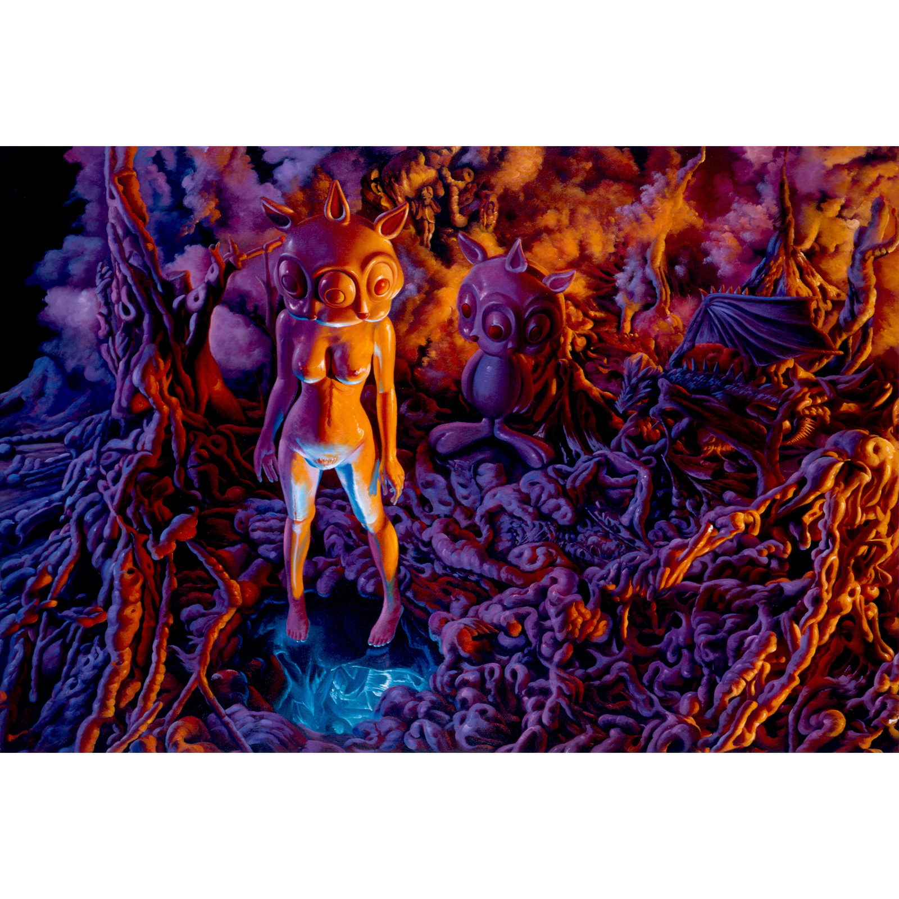
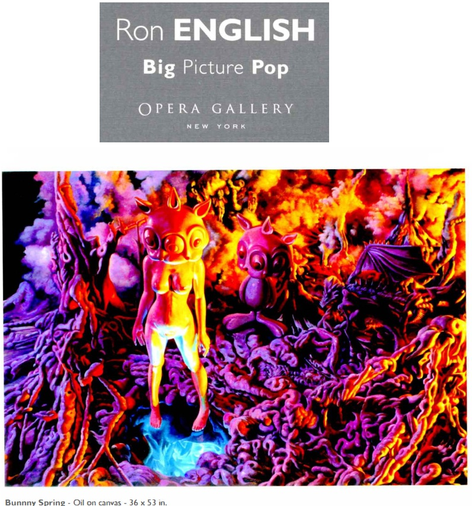
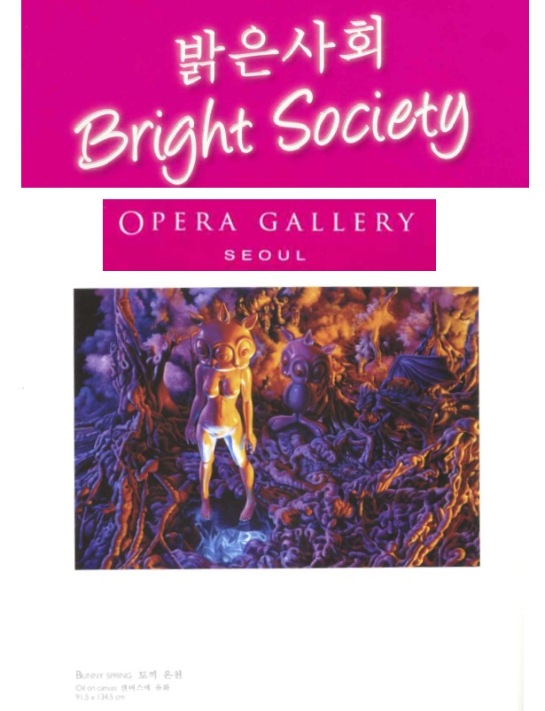
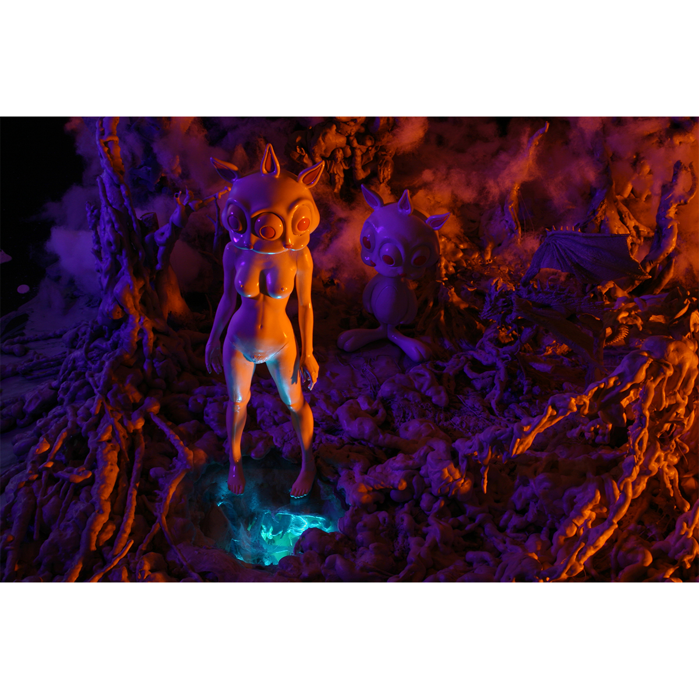

Exhibitions
Big Picture Pop, Opera Gallery, New York, New York, US, November 29–late December 2007.
Bright Society, Opera Gallery, Seoul, South Korea, October 12–31, 2009.
Literature
Ron English, Abject Expressionism: The Art of Ron English (San Francisco: Last Gasp, 2007), p. 90. ISBN 978-0867196894.
Notes
This work is reproduced in the exhibition catalogue for Big Picture Pop.
It is also documented in the exhibition catalogue for Bright Society, where the title is incorrectly given as Bunny Spring.
Ancillary Documentation


